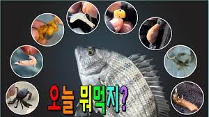
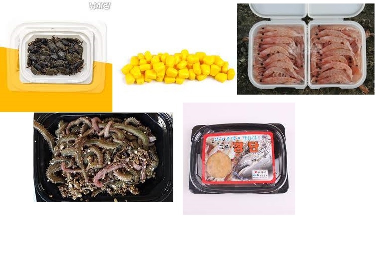
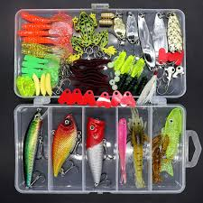
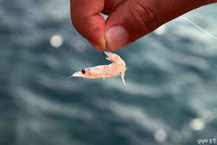
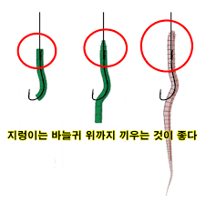

<link href="//maxcdn.bootstrapcdn.com/bootstrap/3.3.0/css/bootstrap.min.css" rel="stylesheet" id="bootstrap-css">
<link href="과제.css" rel="stylesheet" id="bootstrap-css">
<script src="//maxcdn.bootstrapcdn.com/bootstrap/3.3.0/js/bootstrap.min.js"></script>
<script src="//code.jquery.com/jquery-1.11.1.min.js"></script>
<!------ Include the above in your HEAD tag ---------->

 <!-- Static navbar -->
    <nav class="navbar navbar-inverse  navbar-static-top">
      <div class="container">
        <div class="navbar-header">
          <a class="navbar-brand" href="index.html">낚시왕Blog</a>
        </div>
        <div id="navbar" class="navbar-collapse collapse">
          <ul class="nav navbar-nav">
            <li class="active"></li>
            <li><a href="찌낚시.html">찌낚시</a></li>
            <li><a href="루어.html">루어</a></li>
            <li><a href="원투.html">원투</a></li>
            <li><a href="미끼와 종류.html">미끼와 종류</a></li>
          </ul>

          
          <ul class="nav navbar-nav navbar-right">
            <li><a href="회원가입.html">회원가입</a></li>
            <li class="active"><a href="로그인.html">로그인<span class="sr-only">(current)</span></a></li>

          </ul>
        </div><!--/.nav-collapse -->
      </div>
    </nav>

<section class="banner-section">
</section>
<section class="post-content-section">
    <div class="container">

        <div class="row">
            <div class="col-lg-12 col-md-12 col-sm-12 post-title-block">
               
                <h1 class="text-center">미끼와 종류에 대해서</h1><br>
                
            </div>

<div class="col-lg-9 col-md-9 col-sm-12">
<p class="lead"> 
<h3>
미끼의 종류와 미끼 끼우는 방법에 대해 알려드리겠습니다.
</h3>
</p>
                 
<br><br>

<iframe width="560" height="315" src="https://www.youtube.com/embed/1vKs9-Ih-2M" title="YouTube video player" frameborder="0" allow="accelerometer; autoplay; clipboard-write; encrypted-media; gyroscope; picture-in-picture" allowfullscreen></iframe><br>

<br>

<blockquote>
    <p>
    낚시인들이 자주 사용하는 미끼는 주로 크릴, 갯지렁이, 게, 옥수수, 경단이 있습니다.<br>
    낚시를 할 때는 대상어종이 아닌 잡어(복어, 전갱이, 망상어 등)가 미끼를 먹고가거나, 미끼를 망가뜨려놓고 갑니다.<br>
    그렇기 때문에 낚시인들은 자주쓰는 크릴이 아닌 다양한 미끼를 사용하는데요. 갯지렁이, 게, 경단의 같은 경우 잡어들의 공격에 내구성이 좋아 자주 사용됩니다.<br>
    또한 대상어종이 어떤 미끼에 반응을해서 먹을 지 알 수없기 때문에 다양한 미끼를 들고 가는 것이 좋습니다.
    </p>
</blockquote>


<p></p>
<blockquote>
  <p>
    루어는 일단 소재에 따라 크게 3가지로 나눌 수 있습니다.<br>
- 하드 베이트(Hard bait): 금속이나 목재, 합성수지처럼 단단한 소재가 사용된 루어예요. <br>

- 소프트 베이트(Soft bait): 주로 웜(Worm)이라 불리는 지렁이나 벌레, 유충을 모방해서 만든 말랑말랑한 플라스틱 루어를 말해요. 하드 베이트랑 달리 루어 자체에 바늘이 없어서, 단독으로 사용할 수 없구요. 전용 바늘이나 봉돌을 부착해서 사용합니다!<br>

- 콤비네이션 루어: 서로 다른 2가지 이상의 루어 특성을 조합해서 만든 형태를 말해요.<br>
  </p>
  
</blockquote>



<blockquote>
    <p>
        ■ 크릴새우 꿰는 법<br>
        우선 크릴은 꿰기 직전 꼬리지느러미를 떼어주는 게 좋습니다. 이유는 물속에서 꼬리가 프로펠러 역할을 하게 되면서 크릴이 빙글빙글 돌게 되는데 그 모습이 부자연스러워 대상어를 유혹하는데 마이너스가 된다고 합니다. 크릴을 꿸 땐 사진과 같이 꼬리 부분에다 바늘을 넣고 살며시 밀어 넣어 준 후 바늘침은 크릴의 배 부분에서 멈춥니다. 꼬리침은 밖으로 나와도 상관없지만 대상어의 입질이 약아질 수도 있으므로 가급적이면 바늘침이 밖으로 나오지 않게 하는 것이 좋습니다. 몇 번 던지다 보면 바늘이 자연스레 삐져나와 있겠지만 일부러 나오게 할 필욘 없습니다.<br>
    </p>
</blockquote>


<blockquote>
    <p>
        ■ 갯지렁이 꿰는 법<br>
        바늘을 넣고 지렁이의 몸통을 따라 살짝씩 밀어 넣어주면 됩니다. 바늘의 휨새를 생각하면서 밀어넣을때 더듬더듬 해가면서 조금씩 조금씩 넣어줍니다. 중간에 실수해서 바늘이 몸을 뚫고 나올수도 있겠지만 개의치 마시고 다시 넣은 후 쭉쭉 밀어넣어주세요.<br>
        (물기가 있다면 미끄럼 방지를 위해 목장갑을 끼고 하세요)<br>
        바늘귀에 닿을 정도로 밀어 넣으셨다면 다 된겁니다. 바늘침은 결국 몸 밖으로 나오게 되니 이는 크게 신경쓰지 않아도 됩니다.<br>
    </p>
</blockquote>

<!-- Google tag (gtag.js) -->
<script async src="https://www.googletagmanager.com/gtag/js?id=G-MY1RNE63FZ"></script>
<script>
  window.dataLayer = window.dataLayer || [];
  function gtag(){dataLayer.push(arguments);}
  gtag('js', new Date());

  gtag('config', 'G-MY1RNE63FZ');
</script>

<div id="disqus_thread"></div>
<script>
    /**
    *  RECOMMENDED CONFIGURATION VARIABLES: EDIT AND UNCOMMENT THE SECTION BELOW TO INSERT DYNAMIC VALUES FROM YOUR PLATFORM OR CMS.
    *  LEARN WHY DEFINING THESE VARIABLES IS IMPORTANT: https://disqus.com/admin/universalcode/#configuration-variables    */
    /*
    var disqus_config = function () {
    this.page.url = PAGE_URL;  // Replace PAGE_URL with your page's canonical URL variable
    this.page.identifier = PAGE_IDENTIFIER; // Replace PAGE_IDENTIFIER with your page's unique identifier variable
    };
    */
    (function() { // DON'T EDIT BELOW THIS LINE
    var d = document, s = d.createElement('script');
    s.src = 'https://eldzz96.disqus.com/embed.js';
    s.setAttribute('data-timestamp', +new Date());
    (d.head || d.body).appendChild(s);
    })();
</script>
<noscript>Please enable JavaScript to view the <a href="https://disqus.com/?ref_noscript">comments powered by Disqus.</a></noscript>
     
<br>

             </div>
            <div class="col-lg-3  col-md-3 col-sm-12">
          
                <div class="list-group">
                    <a class="list-group-item active list-group-item-danger" href="https://slds2.tistory.com/3585?category=600117" target='_blank'><h4 class="list-group-item-heading">우리나라 수산자원의 금어기 및 포획금지체장</h4> <p class="list-group-item-text">꼭 확인하여 우리나라 수산자원을 지킵시다.</p> </a>
                    <a class="list-group-item list-group-item-success" href="https://slds2.tistory.com/1255?category=600117" target='_blank'><h4 class="list-group-item-heading">짜릿한 손맛, 낚시를 시작하다</h4> <p class="list-group-item-text">내게 맞는 낚시는 무엇일까?</p> </a>
                    <a class="list-group-item list-group-item-info" href="https://slds2.tistory.com/309?category=600117" target='_blank'> <h4 class="list-group-item-heading">갯바위에서 죽어가는 생명</h4> <p class="list-group-item-text">갯바위에 버려진 각종 오물과 쓰레기들에 심지어는 대변까지..</p> </a> 
                </div>

                <div class="well">
                    <div class="media"> <div class="media-left"> <a href="https://www.nongmin.com/news/NEWS/FLD/NWS/358749/view" target='_blank'>  </a> </div> <div class="media-body"> <h4 class="media-heading">감성돔 10만마리, 통영 앞바다로…</h4> 경남도, 수산자원 조성 박차.</div> </div>
                    <div class="media"> <div class="media-left"> <a href="https://news.sbs.co.kr/news/endPage.do?news_id=N1006902134&plink=ORI&cooper=NAVER" target='_blank'>  </a> </div> <div class="media-body"> <h4 class="media-heading">갯바위 낚시객 덮친 '7m 파도'...</h4> 구조대원도 휩쓸려 다쳐.</div> </div>
                    <div class="media"> <div class="media-left"> <a href="https://www.ytn.co.kr/_ln/0115_202209290512125215" target='_blank'>  </a> </div> <div class="media-body"> <h4 class="media-heading">끊이지 않는 방파제 추락사고...</h4> 안전 불감증 여전</div> </div>
                </div>
            </div>
        </div>
      

    </div> <!-- /container -->
</section>


      